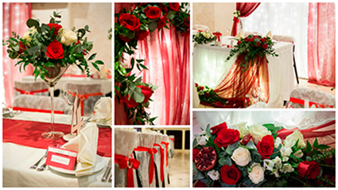
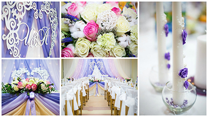
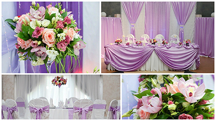
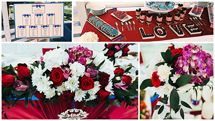

Свадебное торжество оставляет в памяти молодожёнов и близких им людей много прекрасного. Это и красивое видео, и яркие фотографии, и тёплые воспоминания. Каждая пара хочет, чтобы их свадьба была уникальной и неповторимой. Поэтому важное значение стоит уделить оформлению свадебного торжества.
Оформление свадьбы (то есть, декоративное ее наполнение) — один из самых творческих, красивых, волшебных и захватывающих процессов подготовки свадьбы. В настоящее время современные пары все больше выбирают европейские традиции празднования свадебного торжества, поэтому оформление свадьбы играет важную роль. Стараясь идти в ногу со временем, изучая обновления европейских свадебных тенденций, посещая различные семинары и курсы, совершенствуя свои навыки в искусстве оформления свадеб и понимая пожелания невест, мы разрабатываем целостные концепции оформления свадеб.
Если оглянуться на 10-20 лет назад, то мы увидим, что цветочное оформление свадьбы практически не существовало. Даже свадебный букет невесты не всегда был из живых цветов. Свадьбы ещё в конце прошлого века украшали вышитыми рушниками, плакатами «Совет да любовь», скатертями, салфетками, чуть позже можно увидеть скромное оформление воздушными шарами.
Но время не стоит на месте. В свадебной индустрии за последние несколько лет произошли большие изменения. Теперь современную свадьбу сложно представить без флористического оформления. Предельный минимум, который допустим в свадебном оформлении – это обязательные атрибуты для невесты и жениха: свадебный букет и бутоньерка. Стало модным оформление президиума (стола жениха и невесты) и столов гостей живыми цветами, украшение зала декорациями, тканями, гирляндами.
Оформление свадебного банкетного зала цветами — это не просто живые цветы на столах. Современные цветочные композиции - главный элемент дизайна при оформлении свадьбы. Какой бы стиль вы не выбрали для своего торжества, оформление живыми цветами добавит свадьбе элегантности и будет актуально всегда.
Свадебная флористика — это нежность и красота, свежесть и молодость, торжественность и романтичность, это живая роскошь природы, которая создана для того, чтобы украшать самые счастливые дни в нашей жизни.
Очень стильно смотрятся свадьбы, при оформлении которых делается акцент на декоративном украшении: использование в оформлении тканей, лент, гирлянд, икебан, и различных других элементов декора.
От стильного свадебного оформления зависит очень многое: Ваши воспоминания, эмоции, атмосфера праздника, восхищения гостей и, конечно же, красивые фотографии.
Флористы-декораторы нашей студии воплотят в жизнь ваши самые смелые идеи и помогут сделать ваш день ярким, запоминающимся и неповторимым.
